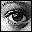

Document Proxy-a drag-and-drop "link" to the document, represented by
the small icon in the upper-left corner of the window
Editor (category) list-a list of all the items that can be edited in
the document
Information about the document, shown in the upper-right portion of
the window
An example of two different Document Windows is shown in Figure 3.
Document Window editor list
The editor list in the document window shows you the "concepts" a file
contains and the data 3DO PostPro is capable of editing. Double-clicking
on an item in the editor list brings up an editor, usually a window with
various options, or an image. Editors come in various shapes and sizes,
and are designed to suit a specific type of data.
For instance, the Attributes category brings up an editor to modify the
CCB flags for the cel. The Effects category brings up an editor to modify
PIXC settings for the cel. An example of Document Windows with varying
editor list categories, is shown in Figure 1.
The Document Proxy allows you to drag and drop a "link" to the file to a
Workbench. 3DO PostPro displays the document on the Workbench and the
television monitor. The figure below shows the Document Proxy.

Figure 2: Document Proxy from the Document Window.